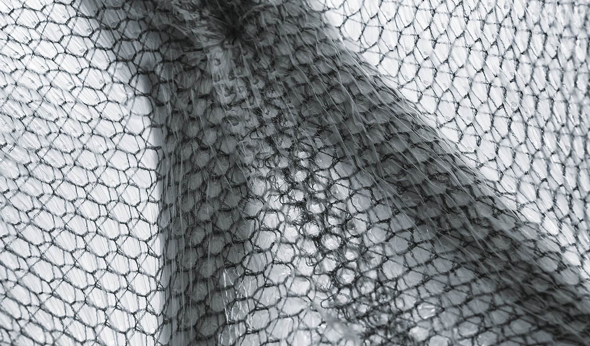
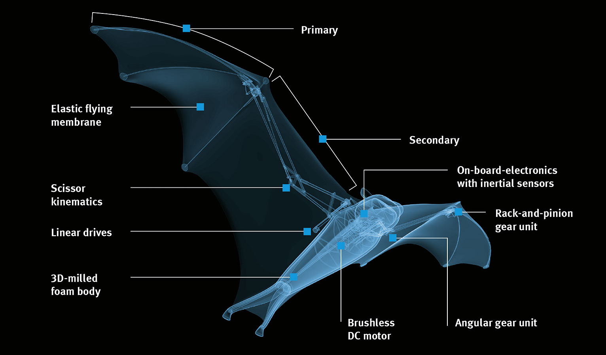

BionicFlyingFox
Ultra-lightweight flying object with intelligent kinematics
For the BionicFlyingFox, our developers from the Bionic Learning Network took a close look at the flying fox and technically implemented its special flying characteristics. Due to the combination of the integrated on-board electronics with an external motion-tracking system, the ultra-lightweight flying object is able to move semi-autonomously in a defined airspace.

The flying fox belongs to the order Chiroptera – the only mammals that can actively fly. A particular characteristic is their fine elastic flying membrane that stretches from the extended metacarpal and finger bones down to the foot joints. In flight, the animals control the curvature of the flying membrane with their fingers, allowing them to move aerodynamically and agilely through the air. They thereby achieve maximum uplift, even when performing slow flying manoeuvres.

Agile kinematics based on a natural role model
With a wingspan of 228 cm and a body length of 87 cm, the artificial flying fox weighs just 580 g. Like the natural flying fox, its wing kinematics are also divided into primaries and secondaries and covered with an elastic membrane, which continues from the wings down to the feet. This makes its wing area relatively large, allowing a low area loading. As with the biological model, all the articulation points are on one plane, meaning that the BionicFlyingFox can control and fold its wings together individually.
Specially developed flying membrane
The model’s flying membrane is wafer-thin, ultralight whilst also robust. It consists of two airtight films and a knitted elastane fabric, which are welded together at approximately 45,000 points. Due to its elasticity, it stays almost uncreased, even when the wings are retracted. The fabric’s honeycomb structure prevents small cracks in the flying membrane from getting bigger. This means that the BionicFlyingFox can continue flying even if the fabric sustains minor damage

Semi-autonomous flying in a defined space
So that the BionicFlyingFox is able to move semi-autonomously in a defined space, it communicates with a motion-tracking system. The installation constantly records its position. At the same time, the system plans the flight paths and delivers the necessary control commands for this. A person performs the start and landing manually. The autopilot takes over in flight.

Sophisticated design: the on-board electronics built into the body combined with the mechanical system in the wings
Moving camera system for exact localisation
An important part of the motion-tracking system is two infrared cameras, which rest on a pan-tilt unit. This allows them to be rotated and tilted in such a way that they can track the entire flight of the BionicFlyingFox from the ground. The cameras detect the flying fox by means of four active infrared markers attached to the legs and wing tips.